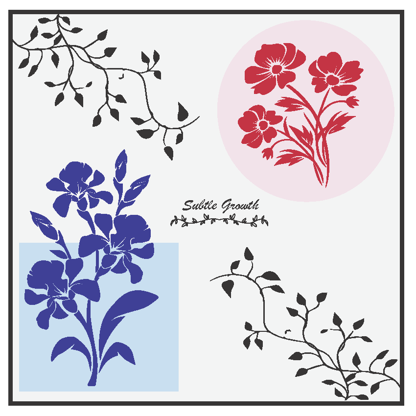
Dye Sublimation Project
A print design experiment using dye sublimation techniques to explore color blending and growth.
Browse through my creative work — from print projects to photography assignments.

A print design experiment using dye sublimation techniques to explore color blending and growth.
.png)
A screen printing project showcasing branding layouts and print production practice.
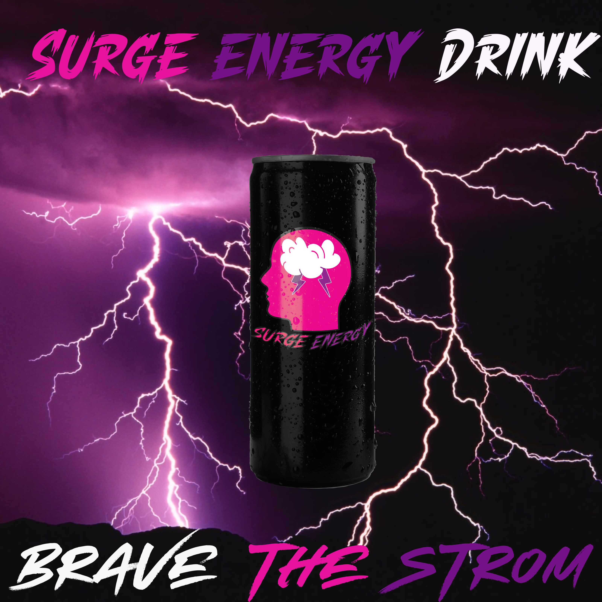
A bold and high-impact advertisement for Surge Energy Drink.
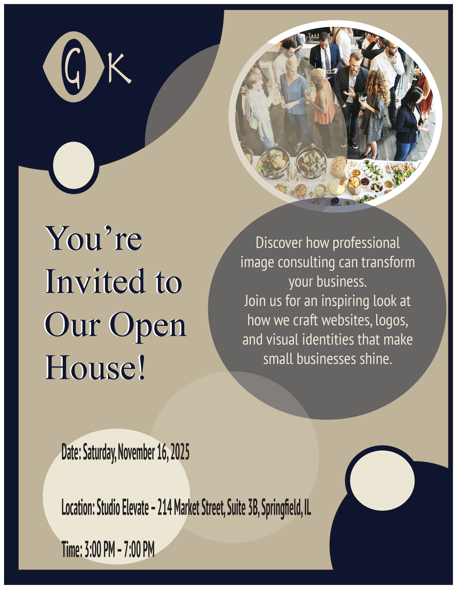
A promotional flyer designed for a professional image consulting open house, blending modern layout and brand-focused visuals.
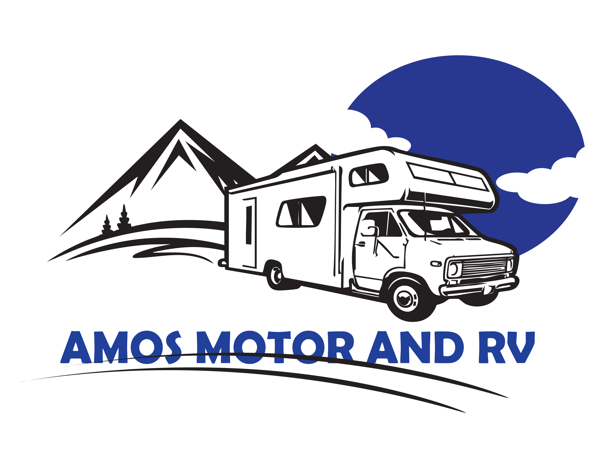
A bold vector logo combining an RV illustration with a scenic backdrop to represent a motor and RV service brand.

A playful and colorful logo created for a children’s charity initiative focused on providing shoes to young kids.
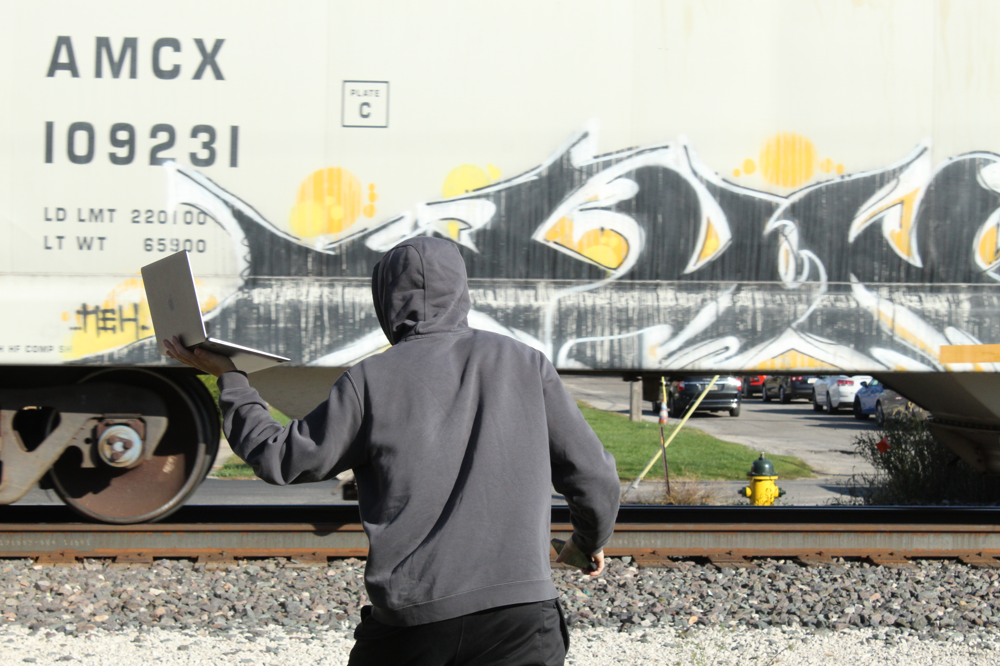
Capturing fast-moving subjects with sharp clarity using high shutter speeds, freezing energy and detail in a single frame.
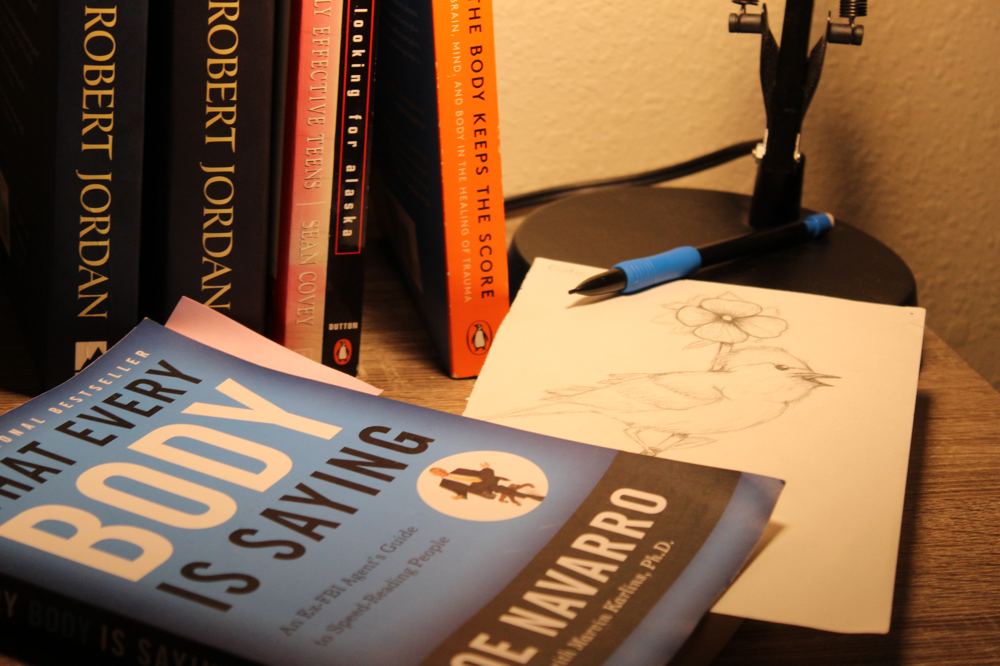
A self-portrait project designed to capture personality and perspective through composition, lighting, and expression.
An environmental study of a criminal justice student, using setting and composition to reflect both identity and career path.
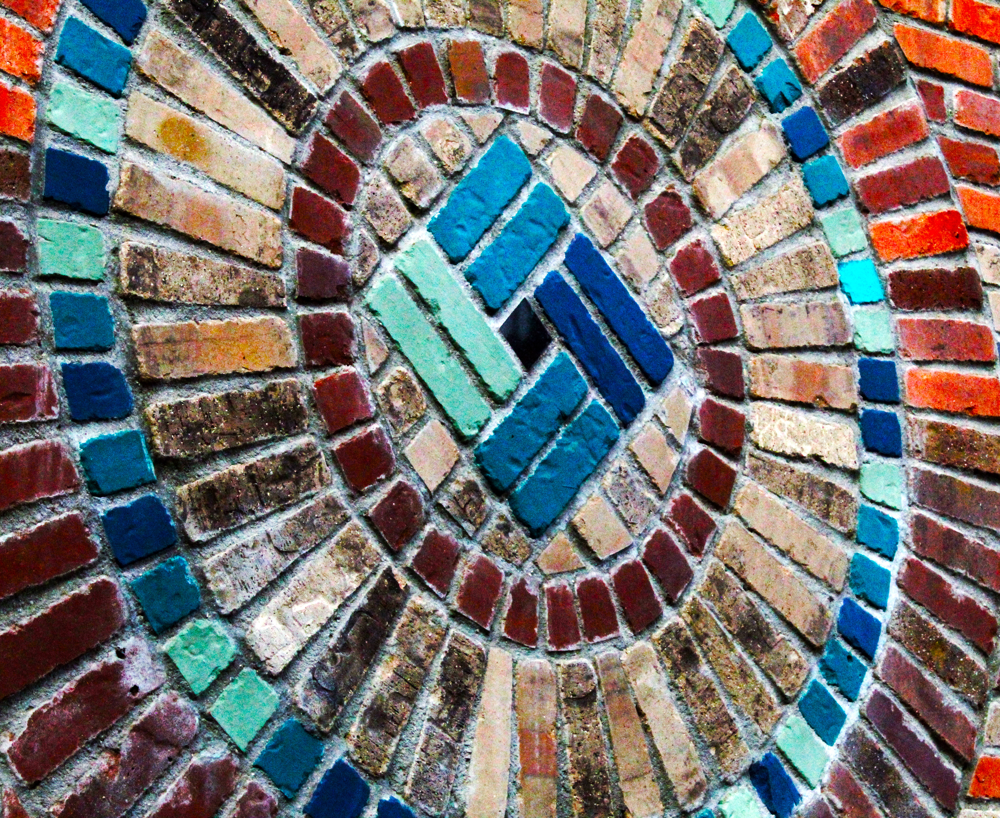
A study in symmetry and texture, capturing the intricate radial brickwork pattern found in architectural design.
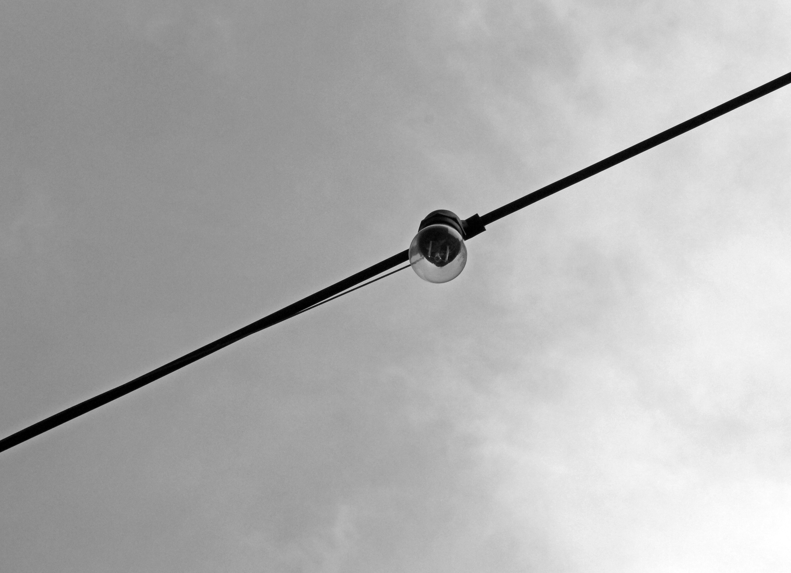
A minimalist black‑and‑white composition highlighting the contrast between a lone bulb and a cloudy sky.
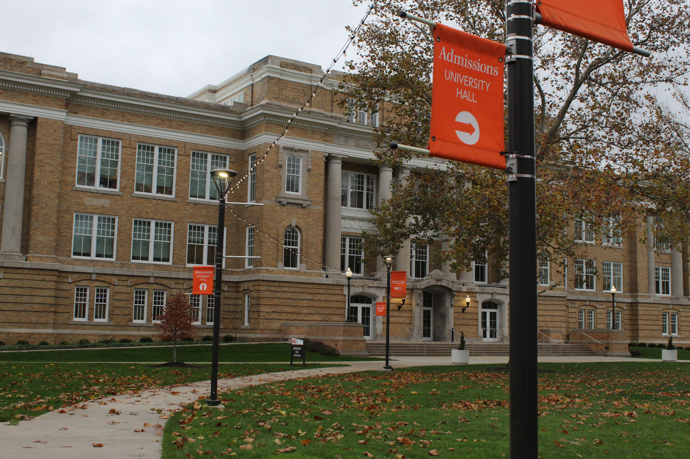
A documentary-style campus photograph capturing the historic architecture and atmosphere of University Hall.
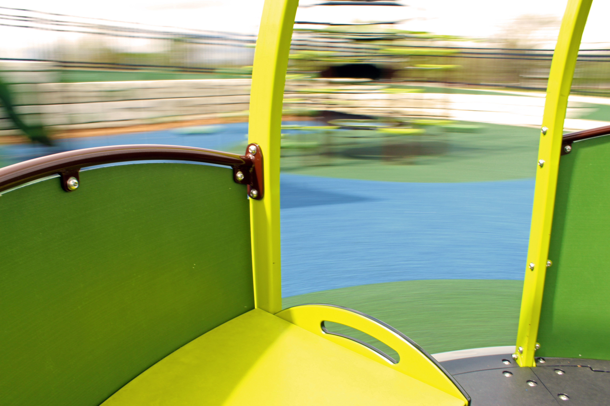
A creative composition blending motion blur and a frozen subject to explore movement and stillness.
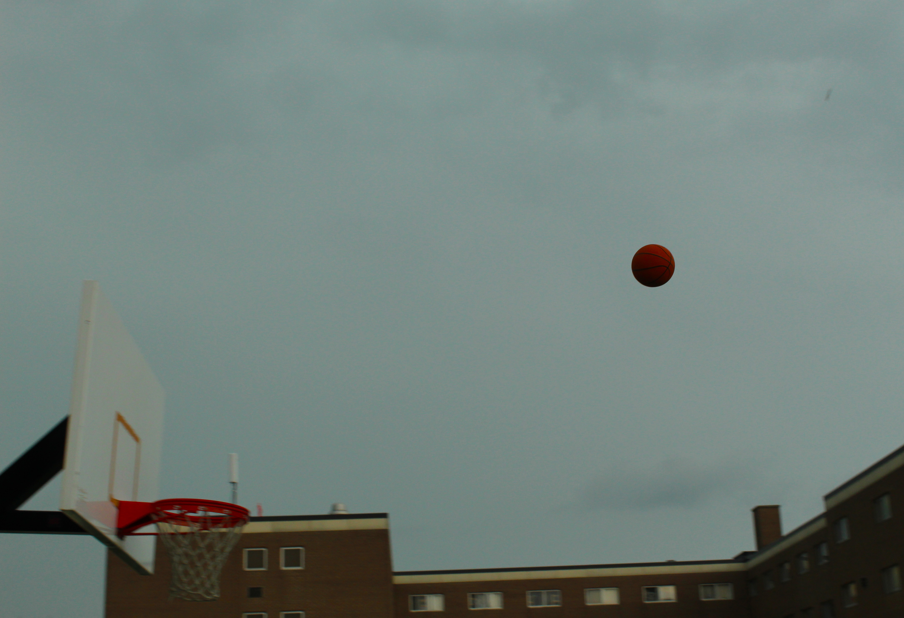
A high-speed sports photograph freezing a basketball midair in a moment of anticipation.
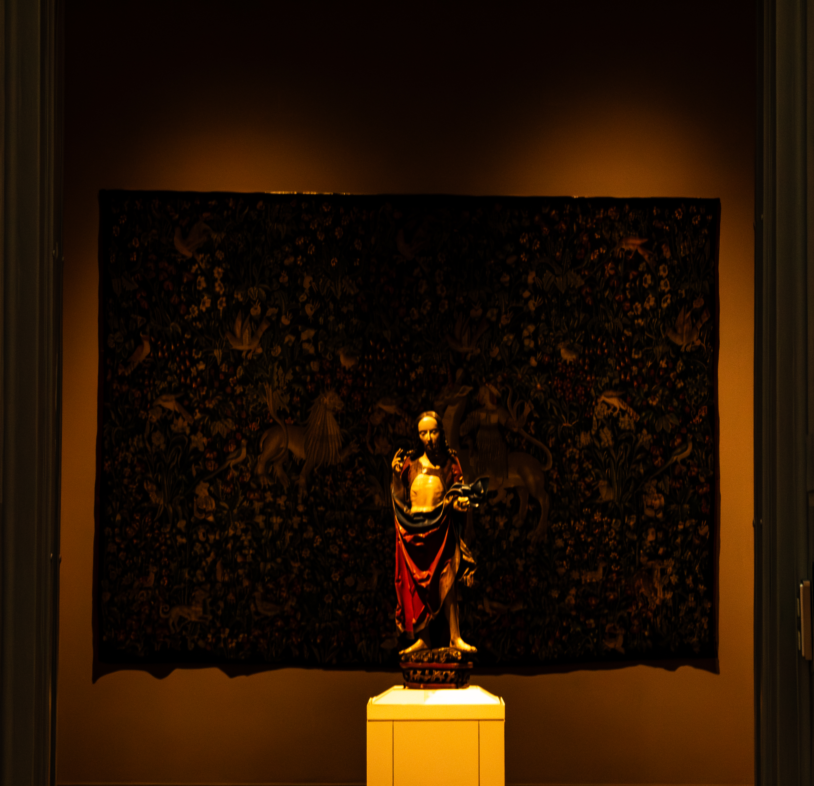
A carefully composed photograph isolating the subject to emphasize spiritual presence and meaning.
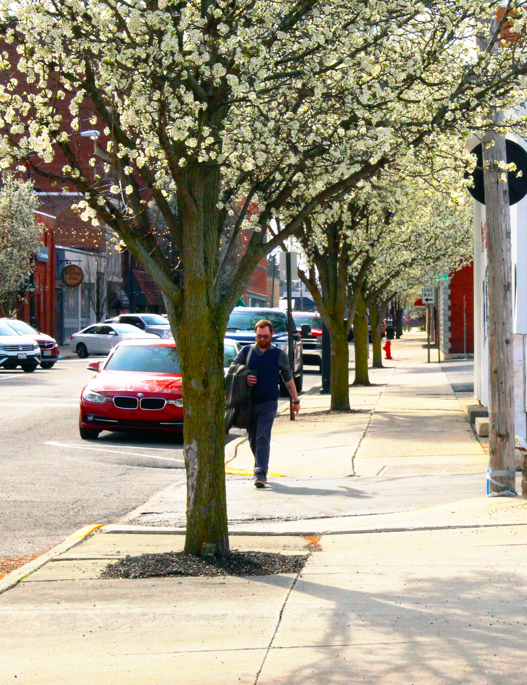
A candid street photograph capturing everyday life through timing, light, and storytelling.
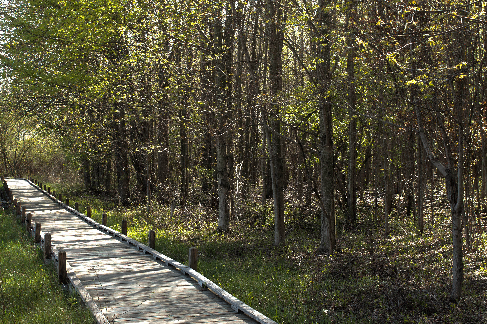
An HDR image blending multiple exposures to achieve balanced light and rich detail.